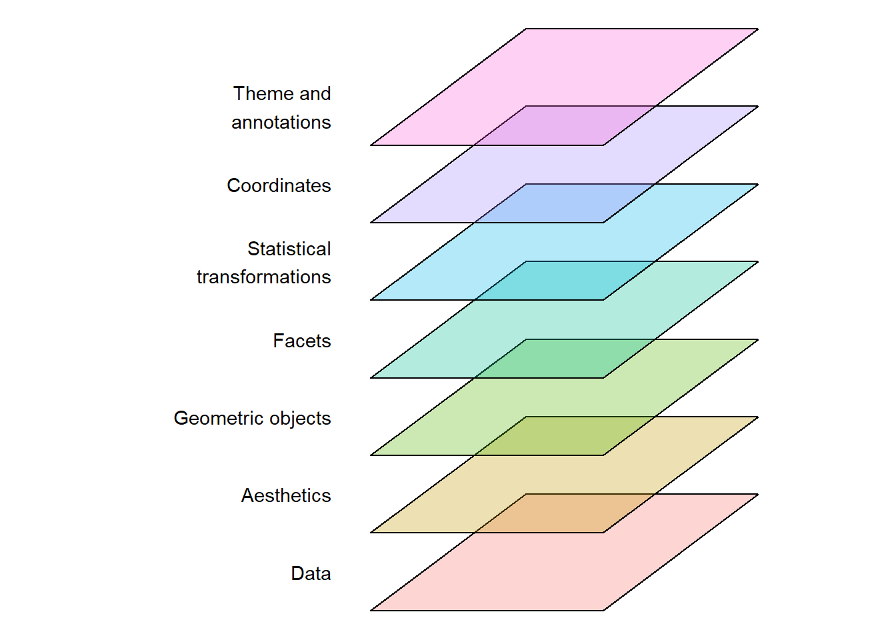
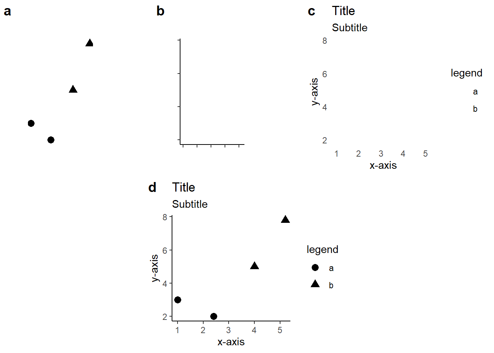

1 A grammar of graphics
Building on Wilkinsons The Grammar of Graphics (Wilkinson and Wills 2005), Wickham (Wickham 2010, 2016) implemented a graphical grammar to R through the package ggplot2. The idea behind both Wickhams and Wilkinsons formalized syntax for creating data visualizations is to avoid special cases or duplicate methods and allow for creation of data visualizations based on a set of core components used in all graphics (Wickham 2010; Wilkinson and Wills 2005).
The grammar (in the version described by Wickham (Wickham 2010)) has seven components that together creates a ggplot2 visualization (Figure 1.1).
The underlying data contains the variables that are mapped to aesthetics such as coordinates, colors or shapes. Each aesthetic can be controlled through scales by assigning values to coordinates, colors, shapes etc. Geometric objects creates the visual representations of the mapping. Sometimes small multiples of the same graph are created using facets which creates subdivision of the data to be plotted in different panels. Statistical transformations creates summaries of the data, however, in its simplest form, the transformation is the identity transformation. All graphical representations are plotted in a coordinate system. Theme and annotations adds non-data layers to the plot which can include geometric shapes or text (Figure 1.1).
1.0.1 Building blocks of a plot
Using a similar example as in (Wickham 2010) a basic plot can be broken down into the data (see Table 1.1), geometric objects, scales and coordinates and annotations. These components, that can be individually manipulated, together creates the final plot (see Figure 1.2 a-d).
| x | y | shape |
|---|---|---|
| 1.0 | 3.0 | a |
| 2.4 | 2.0 | a |
| 4.0 | 5.0 | b |
| 5.2 | 7.8 | b |

The corresponding code to create this plot is fairly straight forward:
library(ggplot2)
1df <- data.frame(x = c(1, 2.4, 4, 5.2),
y = c(3, 2, 5, 7.8),
shape = c("a", "a", "b", "b"))
2 ggplot(data = df,
3 mapping = aes(x = x, y = y, shape = shape)) +
4 geom_point(color = "black", size = 3) +
5 labs(title = "Title",
subtitle = "Subtitle",
x = "x-axis",
y = "y-axis",
shape = "legend") +
6 theme_classic()- 1
- A simple data frame is saved containing the variables we will plot
- 2
- The data is explicitly called
- 3
- Variables are mapped to coordinates (x and y) and shapes.
- 4
- Geometric objects (points) are specified with color and size determined in the function
- 5
-
Annotations are added to the plot through the
labs(labels) function. - 6
- A pre-built theme is used to change the default appearance of the plot.